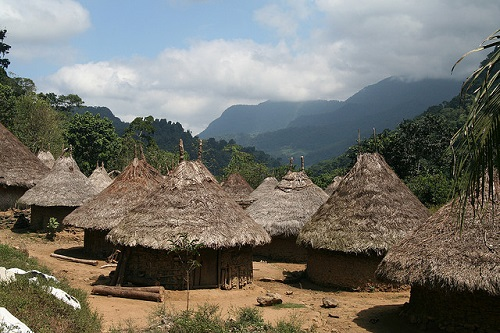

<body style="background-color:#FFF0C9;">
</body>

<p style="text-align:center"><span style="font-size:16px"><strong><span style="font-family:Verdana,Geneva,sans-serif">LA FOR&Ecirc;T AMAZONIENNE</span></strong></span></p>

<p style="text-align:center"><span style="font-family:Comic Sans MS,cursive"><span style="font-size:14px">John Jairo trouve un village. Vous rentrez dans le village ou vous continuez votre chemin?</span></span></p>

<p style="text-align:left">&nbsp;</p>

<table align="center" border="0" cellpadding="1" cellspacing="1" style="width:500px">
	<tbody>
		<tr>
			<td><a href="foretfin1.html"></a></td>
			<td><a href="foretfin2.html"></a></td>
		</tr>
	</tbody>
</table>

<p style="text-align:left">&nbsp;</p>

<p style="text-align:left">&nbsp;</p>
